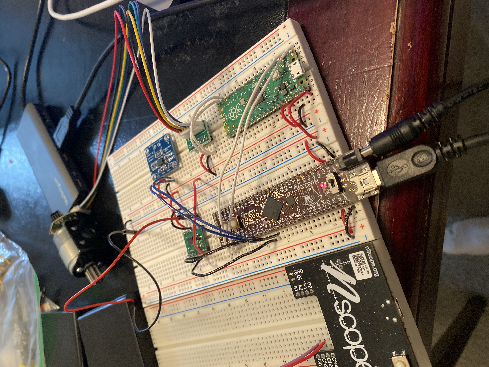
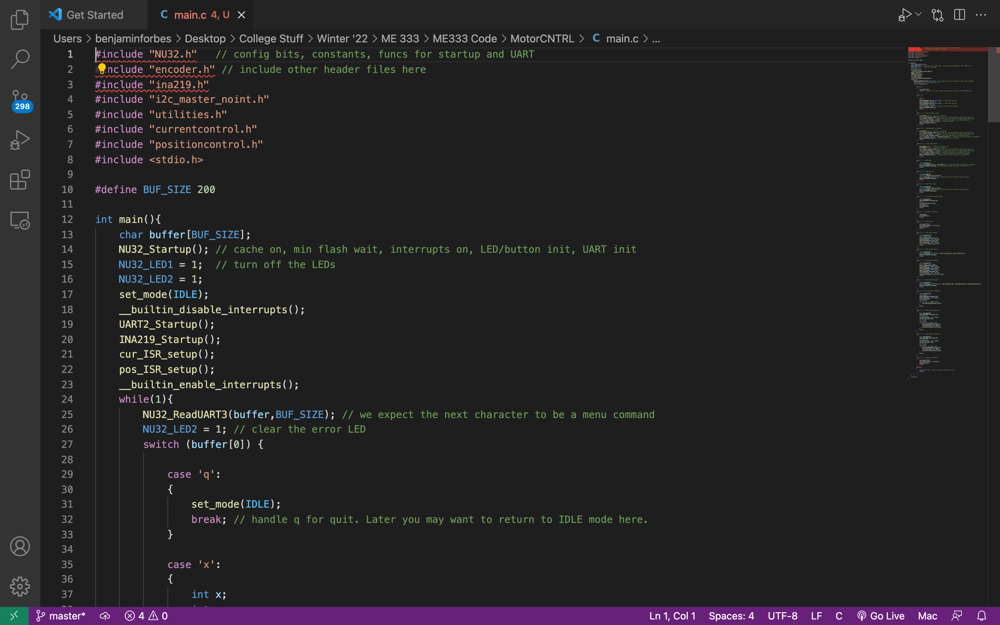

Motor-Control
Class project at Northwestern

Introduction to Mechatronics
Thanks to my first-person drone project, I had some experience in mechatronics, mainly with the hardware aspect. However, I had yet to learn how my hardware interacted with the programs I was running. The goal of this class project was to be able to design, code, and implement a motor control system. I did so by creating a PID controller using a motor, Raspberry Pi encoder, current controller, and H-Bridge.
Implementing My Skills
Making a motor track a position required me to use every skillset in my toolbelt. In the hardware aspect, I had to read and understand datasheets to visualize what was happening inside the PID controller. Then, I had to solder pins and wire multiple microchips together so that they worked in unison. In code, I had to understand the different functions and loops I needed to create in order for my hardware to work seamlessly. I was slow and careful in how I built my project. First, I tested the necessary code using an LED as a signal for my analog outputs. Then, I wired each component separately so I could ensure each one worked properly before moving on.
I believe that it was my approach to tackling this large problem that made me successful. I broke my large goal of finishing the project into smaller, more process oriented goals. Each week I would figure out what I needed to get done to be on track to make the final due date. Instead of waiting till the last moment, I made steady progress and took the time to learn methods that will be with me for the rest of my career.
Learning C Code
This project is a tribute to my hard work and perseverance. I had no concept of C code before this project and had to learn it from the ground up. Learning C in the process of a project was difficult, but my success in finishing the project can be attributed to my gritty attitude.
Debugging and More Debugging
My motor control system had so many details that could go wrong. That being said, if there was a mistake to make in my code, I made it. The code I wrote took hours to debug. Towards the end of the project I made one change and it broke the entire PID loop. After asking friends, family, and my professor to look at my code, all it came down to was a missing semicolon. But I did not give up, and it made the reward of getting the code to work worth it.
